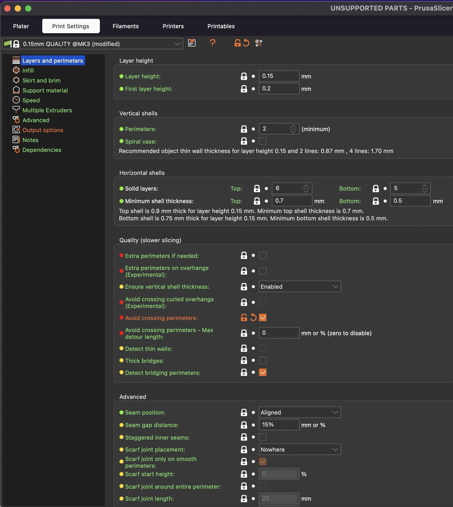

Document your work on the group work page and reflect on your individual page what you learned about characteristics of your printer(s)
About this week
Briefly describe the goal of the assignment. What are you characterizing, testing, or exploring
Carl:
This week we are all taking Niel’s tests prints and testing them on 3 different printing proceses in our Lab, SLS, SLA and FDM.
Thom:
I chose to work with the Formlabs Fuse 1 SLS 3D printer to run the test prints through.
Diarmuid: I chose to work with the FDM printers - specifically the Prusa i3Mk3s+
Tools and materials used
List all the machines, software and materials used in this assignment.
Formlabs - Form 3L
Formlabs - Wash L
Formlabs - Cure L
Formlabs - Clear V4 resin
Thom:
Formlabs - Fuse 1
Formlabs - Fuse Sift
Formlabs - ReForm Slicing Software
Formlabs - Nylon 12 powder
Diarmuid:
Prusa i3MK3s+
Prusa Slicer
PLA filament
PETG filament
Process and methodology
Describe step-by-step what the group did. Include sketches, screenshots, or videos if possible.
Carl - SLA Test Prints on the Formlabs Form 3L
After downloading the test files I brought them into Preform, Formlabs slicer and print managementf software. I spaced the parts out on the build platform.
In order to make the test work as pest as possible i needed to take into account some of the particulars of SLA printing.
First step was to avoid “Cups”. this is where a cup like shape on the print can form a vacum like grip on the base of the resin tank. As this is a relatively fragile material this must be avoided. Damaging the botom of the tank can cause resin to leak into the electronics and optics of the printer, potentially causing irreparable damage.
The next step is dealing with layer adhesion. In my experience in order the first layer of resin prints adhere very strongly to the build plate, to the point where it is quite easy to damage the part when removing it.
So to solve this issue even when the prints are parallel to the build plate i raise them up and place them on supports.
Note that when auto adding supports to the print it generate them everywhare, causing issues with the bridging one for example. So i want en and manually removed areas where the support would have interfered with the test.
If i was printing a model that was not for testing purposes i would try and rotate the part so that there was not large flat areas parallel to the build plate as these can have quality issues, but for the purposes of the test it was more important to maintain the orientation of the parts for the test to have validity.
Preform does a good job of warning me if i have any areas of the print that will cause issues. Here you can see that I have some warnings but i let the print go as we are deliberately testing features like unsupported overhangs.
The prints we sent over the network to the printer. On startup i got a message saying that the printer needed to be leveled so i went through the leveling procedure.
For this print I would be using Nylon powder, so I removed the material container from the post-processing chamber and interted it into the print bed. I made sure to check that the power was connected and it was secured into place.
Since I had a multiple files going to the same print job, I arranged then to minimise the height of the print and for overall print time. I first ran an auto-sort, then rearranged the individual files so that they printed in the orientation they would in an FDM printer.
Once the print was cooled down I removed it from the material matrix and placed it in the preparation area of the chamber (below which was a container to catch the waste material).
Import into Prusa Slicer for 3d printing. Space the parts - I have these well-spaced and for printing one object at a time you need to make sure they print in sequence so that the print head will not crash into the parts. You can check this when looking through the sliced preview and checking each layer.
“avoid crossing parimeters” in the Layers and parimeters section. 
under Output options tick Complete individual objects, you might need to increase the height section if doing this make sure your parts will start printing at the front of the bed and work back.
make sure that parts are evenly spaced - there will be a bounding box around the parts this relates to the extruder clearance radius in the screen shot above (but dont change this unless you understand what you are doing) also make sure the parts are in order printing front to back - you can adjust the order in window on the right by dragging and dropping the object part names.
this looks good - sequential printing like this has many benefits including improved layer adhesion less stringing and if a part fails something might finish - as we will see later…
The printer will start to preheat - its always a good idea to stick around to inspect the first layer to make sure its sticking and that your printer is doing as expected.
We can see that the print will take 7 hours I did check the first layer but forgot to photograph it heres a photo of the first part a few layers in though (probaly about 40 min into the print)
I noticed some curling and stringing from the filament indicating the filament could wet and the print surface could need cleaning. All looks good apart from that so far!!
spoke too soon!! the last part failed😩… but because we printed one part at time have complete parts 😃.
{kind=link}
{kind=link}
{kind=link}
{kind=link}
{kind=link}
{kind=link}
{kind=link}
{kind=link}
{kind=link}
{kind=link}
{kind=link}
{kind=link}
{kind=link}
{kind=link}
{kind=link}
{kind=link}
{kind=link}
{kind=link}
{kind=link}
{kind=link}
{kind=link}
{kind=link}
{kind=link}
{kind=link}
{kind=link}
{kind=link}
{kind=link}
{kind=link}
{kind=link}
{kind=link}
{kind=link}
{kind=link}
{kind=link}
{kind=link}